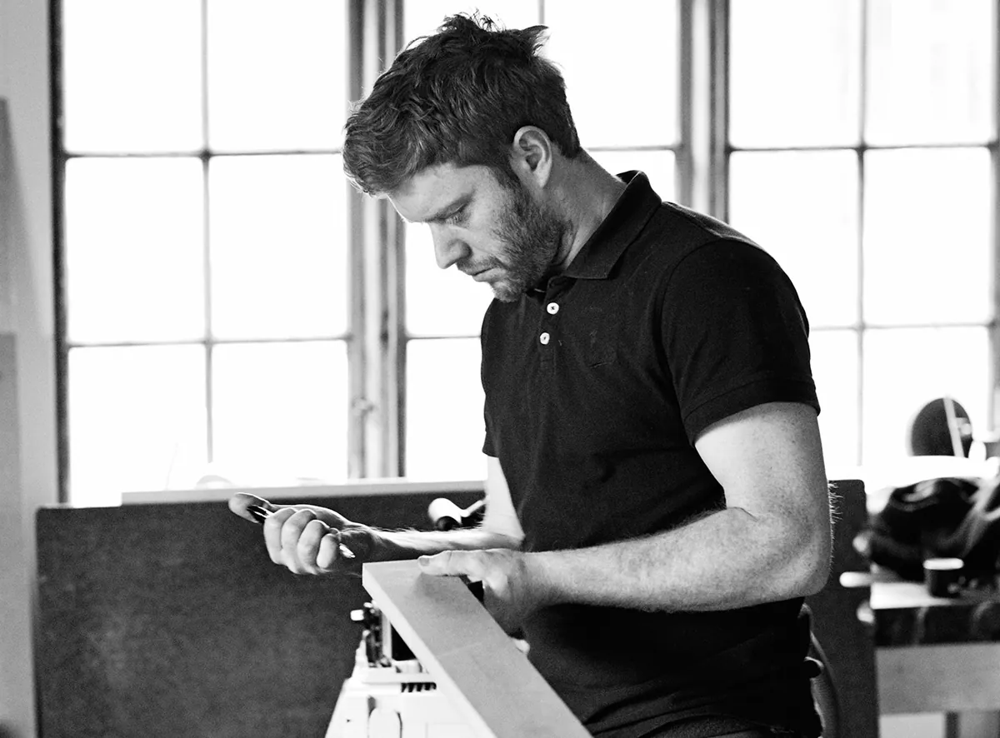
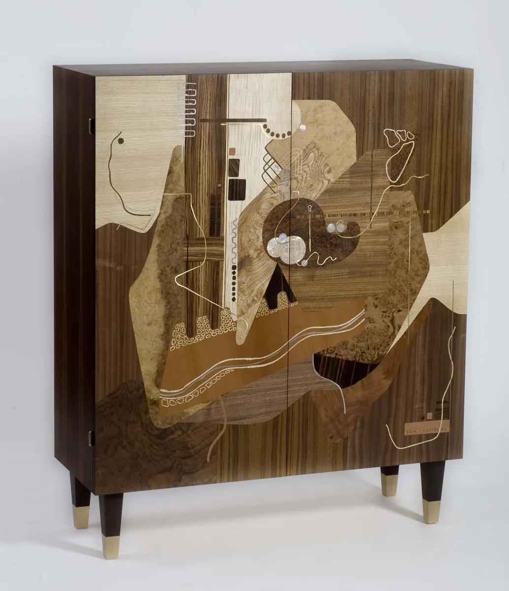

Om Johannes
Hantverket.
Och människan bakom.
Jag heter Johannes Lindgren och arbetar med det jag tycker allra mest om: att formge och tillverka saker med händerna.

Möbelsnickarmästare på Öland
Ett litet snickeri.
Med stora möjligheter.
Jag arbetar på beställning för privatpersoner, arkitekter och offentliga verksamheter, bland annat kyrkor. Kontakten med dig är en viktig del av arbetet, från den första idén till de sista detaljerna.
Verkstaden finns i Mörbylånga på södra Öland. Mina kunder finns på Öland, i Kalmar och runt om i Sverige.
Vägen till verkstaden
Ett kunnande
att föra vidare.

Jag utbildade mig på Carl Malmstens skola Capellagården på Öland och gjorde mitt gesällprov 2007. Provet var Livets vågskål av Erik Chambert. Därefter undervisade jag i möbelsnickeri vid universitetet i Graz i Österrike.
Tillbaka i Sverige startade jag Lindgren Möbelsnickeri i Stockholm. År 2012 flyttade min familj och jag till Öland och jag tog över den gamla snickeriverkstaden Gentzells i Mörbylånga.
Verkstaden byggdes 1928. Här fortsätter en lång tradition av möbler och finsnickerier, med dagens krav på funktion och hållbarhet. Elen till snickeriet kommer från egna solpaneler på taket.
Jag är också utbildad yrkeslärare i möbel- och finsnickeri och återkommer som sommarkurs- och gästlärare på Capellagården och Designskolan vid Ölands Folkhögskola.
Läs intervjun i Care of Carl Magazine
Gesällprovet 2007
Respekt för
material och detaljer.
Att arbeta med händerna kräver närvaro. För mig är det en stor del av glädjen i yrket: att följa en tanke hela vägen till något som går att se, känna på och använda.
En bra början
Ska vi prata om
ditt projekt?
Berätta vad du har i tankarna. Vi hjälper dig att ta nästa steg.